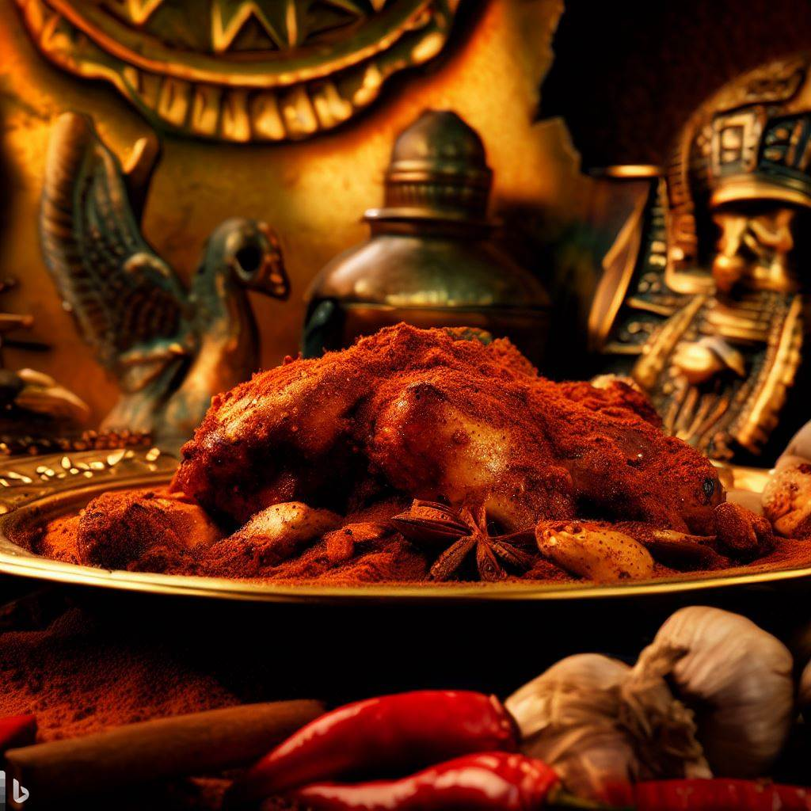

Tutankhamun's Spiced Chicken

Description
A flavorful and easy-to-make chicken dish that's fit for a Pharaoh.
Ingredients
-
4 boneless, skinless chicken breasts
-
1 tablespoon of olive oil
-
1 tablespoon of ground cumin
-
1 tablespoon of paprika
-
1/2 teaspoon of ground cinnamon
-
1/2 teaspoon of ground coriander
-
Salt and black pepper to taste
-
Lemon wedges for serving
Steps
-
Preheat the oven to 375°F (190°C).
-
In a small bowl, mix together the olive oil, cumin, paprika, cinnamon, coriander, salt, and black pepper.
-
Rub the spice mixture all over the chicken breasts, making sure they're coated evenly.
-
Place the chicken breasts in a baking dish and bake in the preheated oven for 20-25 minutes, or until cooked
through.
-
Serve the chicken hot with lemon wedges on the side.